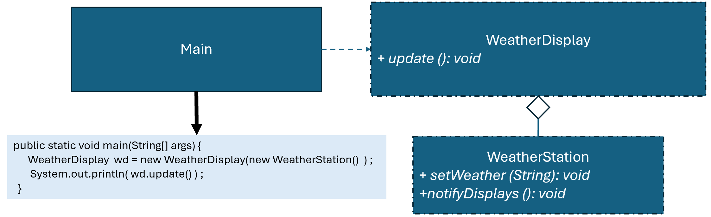

優點
缺點
總評
學生本次互動僅展現基礎的任務導向表現，總體是將自己理解系統流程、優點寫成報告，缺乏與AI真的互動討論、驗證、追問或比較。人機互動層次偏向『答案導向』，較難展現高層次主體思考或共同建構歷程。
import java.util.ArrayList;
interface ISubject {
void registerObserver(IObserver obs);
void removeObserver(IObserver obs);
void notifyDisplays();
}
interface IObserver {
void update(String weather);
}
class WeatherStation implements ISubject {
private ArrayList observers = new ArrayList<>();
private String weather;
public void setWeather(String weather) {
this.weather = weather;
notifyDisplays();
}
@Override
public void registerObserver(IObserver obs) {
observers.add(obs);
}
@Override
public void removeObserver(IObserver obs) {
observers.remove(obs);
}
@Override
public void notifyDisplays() {
System.out.println("Notifying displays about weather change to: " + weather);
for (IObserver iObserver : observers) {
iObserver.update(weather);
}
}
}
class WeatherDisplay implements IObserver {
private String city;
public WeatherDisplay(String city) {
this.city = city;
}
@Override
public void update(String weather) {
System.out.println(city + " received WeatherStation update. New weather: " + weather);
}
}
public class Main {
public static void main(String[] args) {
WeatherStation subject = new WeatherStation();
IObserver obs = new WeatherDisplay("Taipei");
subject.registerObserver(obs);
subject.setWeather("Cold"); // 顯示 "Taipei received WeatherStation update. New weather: Cold "
subject.removeObserver(obs);
}
}
!@#$報告
新設計有何優點?
這段程式是用「觀察者模式」設計的天氣通知系統。程式裡有兩個主要角色：WeatherStation（天氣站）和 WeatherDisplay（顯示器）。天氣站負責記錄天氣狀態，也會管理所有註冊的顯示器，當天氣有更新時就會通知所有顯示器。每個顯示器則是觀察者，它們會接收到天氣站的訊息並顯示出來。
程式的流程如下：首先，我們建立一個 WeatherStation 的物件作為主題，然後建立一個 WeatherDisplay 的物件來代表台北的顯示器。接著把這個顯示器註冊到天氣站，表示它想要接收天氣更新。當我們呼叫 setWeather("Cold") 的時候，天氣站就會把新的天氣狀態通知給所有註冊的顯示器，顯示器收到後會印出「Taipei received WeatherStation update. New weather: Cold」。如果之後不想再接收更新，只要呼叫 removeObserver 把顯示器移除即可。
整體來看，這個設計的好處是擴充性很高。如果以後要新增更多城市的顯示器，只要建立新的 WeatherDisplay 物件並註冊即可，不需要修改天氣站的程式。這樣不但程式維護簡單，也符合物件導向的開放封閉原則（對擴充開放，對修改封閉）。此外，觀察者模式讓天氣站和顯示器之間的耦合度降低，天氣站只負責管理通知，而顯示器只專注於顯示資料，責任分工清楚。
簡單來說，這個程式模擬了現實生活中天氣資訊傳遞的情況：天氣站就像氣象局，負責收集資料並發布，而各個城市的顯示器就像民眾或應用程式，收到訊息後做出反應。使用觀察者模式不僅讓程式結構清楚，也方便未來增加新的功能或新的顯示器。!@#$
假設有多個氣象顯示單位(WeatherDisplay)關注氣象站(WeatherStation)的氣象資料。
請檢視程式碼介面是否違反 Observer 模式，並撰寫報告，討論新設計有何優點?

public class Main {
public static void main(String[] args) {
ISubject subject = new WeatherStation( );
IObserver obs = new WeatherDisplay ("Taipei") ;
subject.registerObserver( obs ) ;
((WeatherStation) subject).setWeather("Cold"); //顯示 "Taipei received WeatherStation update. New weather: Cold "
subject.removeObserver( obs ) ;
}
}